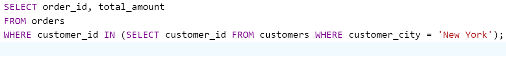
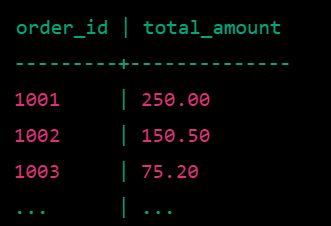

Nested queries, also known as subqueries, are SQL queries that are embedded within another query. They are enclosed within parentheses and can be used in various parts of a SQL statement, including SELECT, FROM, WHERE, and HAVING clauses. A nested query is used to retrieve intermediate results that are then used as input for the outer query, allowing for complex and flexible querying of data. Nested queries can be used for a variety of purposes, such as filtering, sorting, joining, and aggregating data. They are particularly useful when the result of one query needs to be used as input for another query, or when you need to perform operations on a subset of data before applying additional conditions or aggregating the results.
 